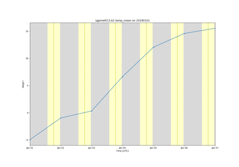
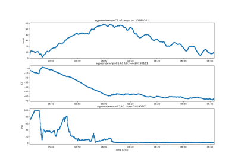
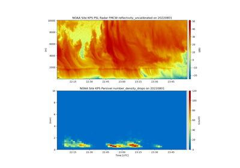

ACT Example Gallery#
This gallery houses examples on different use cases for act including downloading data from web APIs, visualization various types of data, and more. If there are specific use cases you would like to see examples of, please head on over to the ACT discussion page on GitHub.

Plot winds and relative humidity from sounding data
Plot winds and relative humidity from sounding data



Calculate and plot daily daytime temperature averages
Calculate and plot daily daytime temperature averages

Plot a timeseries of sounding data
Plot a timeseries of sounding data


Simple plot of 2D data
Spatial contour plot
Multidimensional cross sections
Multidimensional cross sections



NOAA FMCW and parsivel plot


Plotting Baseline Surface Radiation Network (BSRN) QC Flags
Plotting Baseline Surface Radiation Network (BSRN) QC Flags

Plotting state variables

Working with and expanding embedded quality control variables
Working with and expanding embedded quality control variables